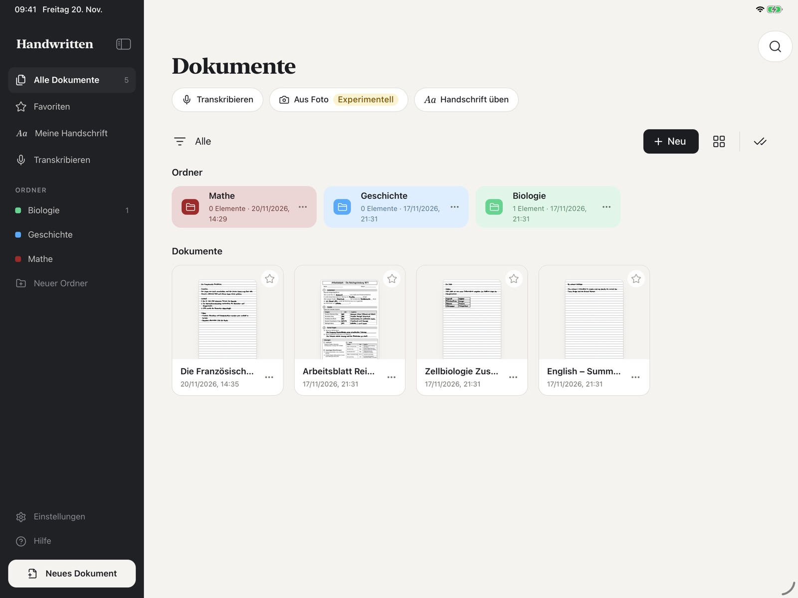
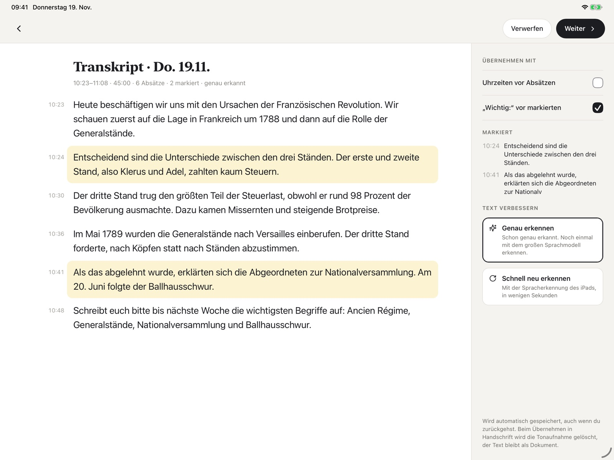
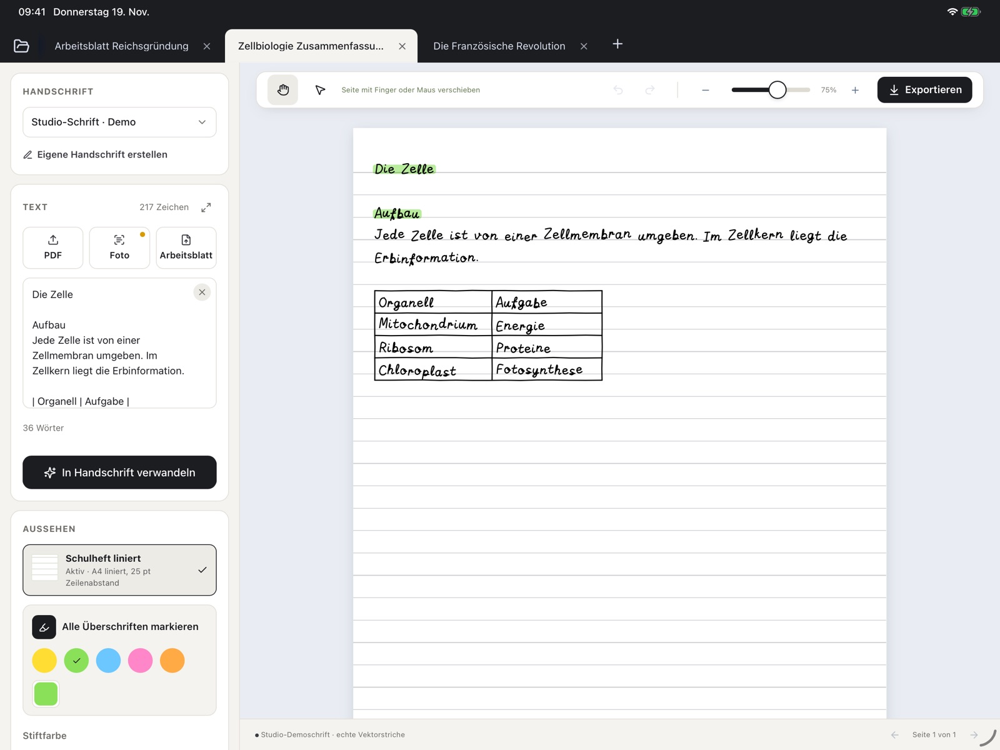

Wann Werbung kommt
- bevor ein Text in deiner Handschrift geschrieben wird
- bevor eine Aufnahme zum Transkribieren startet
- beim Anlegen einer neuen Handschrift
- beim Speichern und Laden einer Sicherung
iPad-App für Schule und Studium
Handwritten setzt Texte aus einem Alphabet zusammen, das du einmal mit dem Apple Pencil schreibst. Absätze, Listen, Tabellen und Überschriften bleiben erhalten – das Ergebnis wirkt wie eine sorgfältig geschriebene Heftseite.
Finanziert durch Werbung, die sich nicht abschalten lässt · braucht Internet · So funktioniert das

Du schreibst jeden Buchstaben einmal auf vorgegebenen Linien. Danach führt dich die App Stufe für Stufe weiter: Zahlen, Schreibrhythmus, Verbindungen.
Tippen, einfügen, aus einem PDF übernehmen oder im Unterricht transkribieren. Listen und Tabellen bleiben erhalten.
Die Seite entsteht in wenigen Sekunden. Einzelne Buchstaben lassen sich anschließend verschieben, löschen oder umfärben.

Kostenlos
Kein Abo, keine In-App-Käufe, keine Testphase und kein Konto. Damit das so bleibt, finanziert sich Handwritten über Werbung an festen Stellen – nie mitten beim Schreiben oder Aufnehmen.
Die Werbung startet einfach, ohne dass du etwas auswählen musst – und immer ohne Ton, damit sie im Unterricht niemanden stört. Danach geht es direkt weiter.
Stufe 4 und 5 der Handschrift schaltest du einmalig nach einer Anzeige frei. Stufe 1–3 sind immer frei.
Werbung lässt sich nicht abschalten, und es gibt keine Bezahlversion. Genau dadurch bleibt die App für alle kostenlos.
Deshalb braucht die App eine Internetverbindung – WLAN oder mobile Daten. Ohne Verbindung pausiert sie, bis du wieder online bist. Eine laufende Aufnahme wird dabei nie abgebrochen.
Deine Texte, Handschriften und Aufnahmen werden nie für Werbung verwendet – sie verlassen das iPad nicht.
Personalisierte Werbung nur mit deiner Erlaubnis. Unter 16 gibt es ausschließlich nicht-personalisierte Werbung.
Handschrift in Stufen
Schon nach der ersten Stufe ist deine Schrift einsatzbereit. Jede weitere dauert nur wenige Minuten und macht das Schriftbild natürlicher – von den Satzzeichen bis zu den Übergängen zwischen den Buchstaben.
Stufe 1–3 sind frei. Stufe 4 und 5 werden einmalig nach einer kurzen Anzeige freigeschaltet.

Transkribieren
Starte zu Beginn der Stunde die Transkription. Die Spracherkennung arbeitet direkt auf dem iPad – Ton und Text werden nirgendwohin hochgeladen. Nach der Stunde liegt der Unterricht als Dokument vor und lässt sich in deine Handschrift übertragen.
Bitte beachten: Gespräche dürfen nur mit Einverständnis aller Beteiligten aufgenommen werden (§ 201 StGB). Kläre die Aufnahme vorab mit der Lehrkraft und beachte die Regeln deiner Schule.

Arbeitsblätter
Lade ein Arbeitsblatt als Foto oder PDF. Die App erkennt die freien Stellen und trägt deine Antworten in passender Größe ein.
Für Lernzettel, Mitschriften und Zusammenfassungen, die in deiner Handschrift vorliegen sollen.

Kein Konto und keine Cloud: Texte, Fotos, Handschriften und Aufnahmen werden ausschließlich auf dem Gerät verarbeitet. Die App ist 100 % kostenlos und wird durch Werbung von Google finanziert – deine Inhalte spielen dafür keine Rolle. Welche Geräte- und Nutzungsdaten dabei übertragen werden, beschreibt die Datenschutzerklärung.